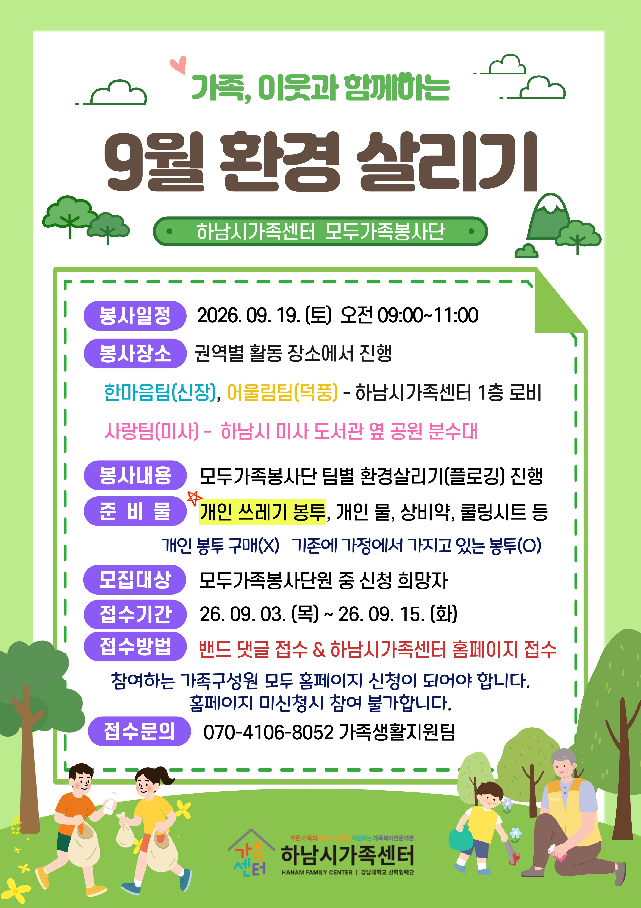
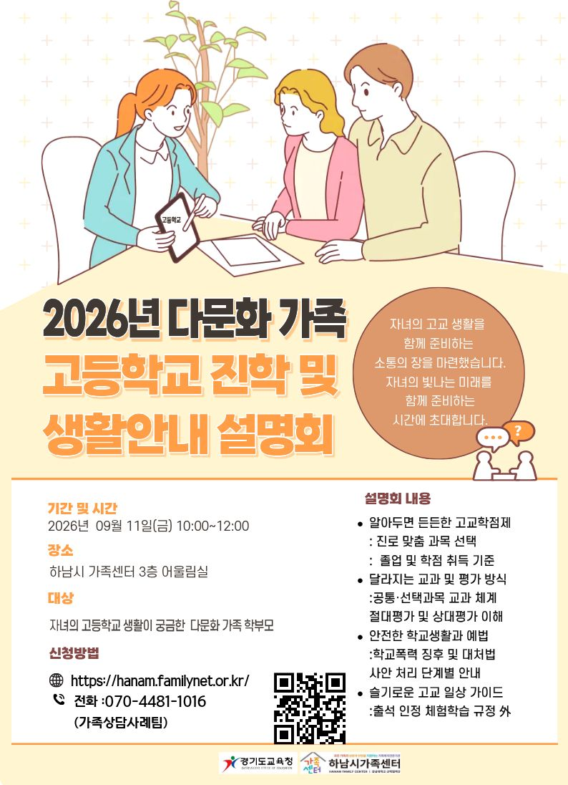

Hanam Inside: Local news, delivered by Lee Kwang-jae
🏙️ KJ's 하남 인사이드
36호 | 2026년 9월 9일 발행
📌 이번 호 주요 목차
🗣️ 우리동네 국회의원 이광재
📰 언론보도
[의정/개발] 이광재 "하남에 AI클러스터…국가예산 미래·복지 병행" (등원 100일 기자간담회)
6·3 보궐선거로 원내 복귀한 더불어민주당 이광재 의원(경기 하남갑)이 등원 100일을 맞아 하남시청에서 기자간담회를 열고 "하남을 AI 바이오·문화 클러스터 거도시로 육성하겠다"는 구상과 함께 교산신도시 3·9호선 연장, 위례 교통대책 등 현안 추진 성과와 국가 예산 확보 전략을 발표했습니다.
📌 출처: 연합뉴스 (이우성 기자)
📰 언론보도
[의정/비전] 이광재 의원 "하남을 세계적 AI 자족도시로 도약시키겠다"
이광재 국회의원이 등원 100일 기자간담회를 통해 하남 교산 자족용지에 포스텍, 카네기멜런대, 싱가포르국립대가 참여하는 AI 연구캠퍼스 유치 추진 방안을 발표하며, 강남과 판교를 넘어선 세계적인 AI 자족도시 조성 비전을 강조했습니다.
📌 출처: 기호일보 (이홍재 기자)
📰 기고/칼럼
[이광재 칼럼] 벤처 키우려면 기술보증기금 곳간부터 채워야 한다
이광재 국회 예산결산특별위원장이 ZDNet Korea 기고 칼럼을 통해 "AI·반도체·바이오·로봇 등 기술기업이 가장 절실할 때 위험을 함께 져주는 기술보증기금의 재정구조를 확충해야 대한민국이 진정한 벤처 강국으로 도약할 수 있다"며 정부 출연금 확충 및 법정 출연요율 인상의 필요성을 강력히 피력했습니다.
📌 출처: 지디넷코리아 (이광재 국회 예결위원장 기고)
🎥 현장일지 (영상)
[현장일지/영상] "주민 생활 속으로!" 이광재의 하남 의정활동 및 현장 소통 리포트
이광재 국회의원의 하남 지역 구석구석 현장 방문과 주민들과의 생생한 소통, 현안 점검 모습을 담은 현장 일지 영상입니다.
📌 출처: 이광재 공식 유튜브 (이광재 TV)
📝 현장일지
[현장일지] "하남의 동네마다 삶이 다르고, 풀어야 할 일도 다릅니다" 덕풍2동 주민총회 & 감북동·초이동 주민간담회
이광재 의원이 덕풍2동 주민총회와 감북동·초이동 주민간담회를 연이어 찾아 동네별 생활 밀착형 현안과 주민들의 생생한 목소리를 경청하고 차질 없는 현안 해결을 약속했습니다.

📌 출처: 이광재 공식 네이버 블로그
📝 현장일지
[현장일지] "등원 100일, 묵은 현안을 풀고 새로운 도전을 시작했습니다"
이광재 의원이 등원 100일을 맞아 지역 기자간담회를 열고 교산신도시 3·9호선, 위례 교통대책 등 숙원 사업 성과와 함께 포스텍·CMU 참여 AI 연구캠퍼스 유치 등 하남의 미래 비전을 종합 발표했습니다.

📌 출처: 이광재 공식 네이버 블로그
📰 하남 지역 주요 뉴스
📰 시정/의회
[정혜영의원] 3수 도전에 나선 미사호수공원 워터스크린, 하남시의회 문턱 넘을까?
하남 미사호수공원 워터스크린 예산(28억원)이 제352회 임시회 추가경정예산안에 포함되며 3수 도전에 나선 가운데, 정혜영 의원은 "객관적인 검증자료가 제출되지 않았다"며 우려를 표한 반면, 이정연 의원은 "지역 상권 활성화를 위해 속도감 있는 추진이 필요하다"며 상반된 입장을 피력했습니다.
📌 출처: 경인일보
📰 시정/문화
하남시, 세계적 안무가 '카니(Kany)' 홍보대사 위촉… 위례 주민 인연
하남시가 팝스타 비욘세의 안무 및 2026 북중미 월드컵 주제가 안무를 총괄한 세계적 안무가 카니(Kany Diabaté Ahn)를 홍보대사로 위촉했습니다. 하남시 위례동 실제 거주 주민인 카니는 향후 2년간 하남의 도시 브랜드 및 주요 문화 축제 홍보대사로 활약합니다.
📌 출처: 경기일보 / 하남시청
📰 경제/생활
서하남농협 감북 하나로마트 9월 17일 개장… 주민 쇼핑 편의 대폭 향상
서하남농협이 감북동 일원에 조성 중인 감북 하나로마트가 오는 9월 17일 정식 개장을 확정 짓고 막바지 준비 작업을 진행 중이며, 신선 농산물 공급 및 감북·초이 주민들의 생활 편의 향상에 기여할 예정입니다.
📌 출처: 투데이광주하남
💬 하남 맘카페 HOT 이슈
2026년 9월 9일 기준 하남 지역 인터넷 커뮤니티에서 가장 화두가 되었던 우리 동네 소식을 모았습니다.
1️⃣ 이광재 의원 등원 100일 간담회… "교산 신도시 포스텍·CMU AI 연구캠퍼스 유치" 기대감 고조
현황: 이광재 의원이 교산 자족용지에 포스텍, 카네기멜런대 등이 참여하는 AI 연구캠퍼스 유치 구상을 발표하고 10월 1일 LH 주민보고회 개최를 예고하자 신도시 맘카페 회원들의 관심이 급증했습니다.
💡 주민 포인트: 3호선·9호선 연장 및 교육·연구 인프라 구축 관련 향후 일정 관심 집중.
💬 주민 반응: "하남이 단순 베드타운을 넘어 명품 자족도시로 발전하길 바랍니다!", "10월 1일 주민보고회 소식 꼭 챙겨봐야겠어요" 기대를 표출.
2️⃣ 위례동 주민 안무가 '카니(Kany)' 하남시 홍보대사 위촉 소식에 맘카페 반응 후끈!
현황: 비욘세 안무가 카니가 위례동 거주 주민이라는 사실과 함께 하남시 홍보대사로 위촉됐다는 소식이 알려지면서 위례·감일·미사 맘카페에 축하 메시지와 소통 글이 폭주했습니다.
💡 주민 포인트: 하남시 문화·예술 행사 참여 기대감 및 청소년·어린이 댄스 멘토링 프로그램 제안.
💬 주민 반응: "우와 우리 동네 주민이셨다니 정말 자랑스러워요!", "하남시 문화 행사 클래스가 한층 높아질 것 같아요" 환호.
3️⃣ 아주대 김경일 교수 '지혜로운 인간생활' 명사 특강 800여 명 만석 참석 후기 쇄도
현황: 하남문화예술회관에서 열린 김경일 교수의 인지심리학 특강에 다녀온 주민들의 감동 후기와 자녀 양육·가족 소통 꿀팁 공유 게시글이 맘카페 인기글에 올랐습니다.
💡 주민 포인트: 현명한 자녀 대화법 및 가정 내 스트레스 완화 인지심리학 핵심 요약 공유.
💬 주민 반응: "강연 내용이 너무 유익해서 시간 가는 줄 몰랐어요", "다음 명사 특강도 미리 신청해서 꼭 가야겠어요" 호응.
🎭 ALL IN 하남라이프
2026년 9월 9일 기준 한눈에 보는 하남시 최신 문화·공연·체험 가이드
🌿 2026.09.19 | 봉사/환경
[봉사/환경] 가족, 이웃과 함께하는 모두가족봉사단 『9월 환경 살리기』 (플로깅)
"가족, 이웃과 함께 플로깅으로 환경을 살려요!"
하남시가족센터에서 모두가족봉사단원 중 신청 희망자를 대상으로 권역별(신장, 덕풍, 미사) 팀별 환경살리기(플로깅) 봉사활동을 진행합니다.
📅 일시: 2026년 9월 19일(토) 09:00 ~ 11:00
📝 접수기간: 2026년 9월 3일(목) ~ 9월 15일(화)
📍 장소: 권역별 활동 장소 (하남시가족센터 1층 로비, 미사 도서관 옆 공원 등)
하남시가족센터에서 모두가족봉사단원 중 신청 희망자를 대상으로 권역별(신장, 덕풍, 미사) 팀별 환경살리기(플로깅) 봉사활동을 진행합니다.
📅 일시: 2026년 9월 19일(토) 09:00 ~ 11:00
📝 접수기간: 2026년 9월 3일(목) ~ 9월 15일(화)
📍 장소: 권역별 활동 장소 (하남시가족센터 1층 로비, 미사 도서관 옆 공원 등)

📌 출처: 하남시가족센터
🏫 2026.09.11 | 교육/다문화
[교육/다문화] 2026년 다문화 가족 『고등학교 진학 및 생활안내 설명회』
"자녀의 빛나는 미래, 고교 생활을 함께 준비하는 소통의 장!"
자녀의 고등학교 생활이 궁금한 다문화 가족 학부모를 대상으로 고교학점제, 달라지는 교과 및 평가 방식, 학교폭력 예방 및 대처법 등 알찬 교육을 진행합니다.
📅 일시: 2026년 9월 11일(금) 10:00 ~ 12:00
📍 장소: 하남시 가족센터 3층 어울림실
👩🏫 대상: 자녀의 고등학교 생활이 궁금한 다문화 가족 학부모
자녀의 고등학교 생활이 궁금한 다문화 가족 학부모를 대상으로 고교학점제, 달라지는 교과 및 평가 방식, 학교폭력 예방 및 대처법 등 알찬 교육을 진행합니다.
📅 일시: 2026년 9월 11일(금) 10:00 ~ 12:00
📍 장소: 하남시 가족센터 3층 어울림실
👩🏫 대상: 자녀의 고등학교 생활이 궁금한 다문화 가족 학부모

📌 출처: 경기도교육청 / 하남시가족센터
📚 2026.09.09~09.30 | 교육/놀이
[교육/놀이] 신장공동육아나눔터x배움나눔이음단 『즐거운 책놀이』 참가자 모집
"책을 소재로 여러 가지 놀이활동을 함께해요!"
하남시 평생교육과와 연계하여 책놀이 지도자 양성과정을 수료한 강사들의 재능 나눔 활동으로 5~7세 유아 대상 즐거운 책놀이 프로그램을 운영합니다.
📅 수업일정: 9월 9일 ~ 9월 30일 (매주 수) 16:20 ~ 17:00
📍 장소: 신장공동육아나눔터
👧 대상: 5~7세 아동 8명 (선착순 모집)
하남시 평생교육과와 연계하여 책놀이 지도자 양성과정을 수료한 강사들의 재능 나눔 활동으로 5~7세 유아 대상 즐거운 책놀이 프로그램을 운영합니다.
📅 수업일정: 9월 9일 ~ 9월 30일 (매주 수) 16:20 ~ 17:00
📍 장소: 신장공동육아나눔터
👧 대상: 5~7세 아동 8명 (선착순 모집)
📌 출처: 신장공동육아나눔터 / 하남시가족센터
🏛️ 공공기관 소식지
🏛️ 하남시청 | 2026.09.09
[하남시청] 2026년 추석 연휴 기간 생활폐기물 배출 일시 중단 및 수거 일정 안내
안내내용: 추석 명절 연휴 기간 중 시민 불편 최소화를 위해 추석 당일 포함 지정 일자에 생활폐기물 배출이 일시 중단되며, 연휴 특별 상황반 운영을 통해 청결 상태를 유지합니다.
문의: 하남시청 자원순환과
문의: 하남시청 자원순환과
📌 출처: 하남시청 자원순환과
🏛️ 하남시립도서관 | 2026.09.01 ~ 09.30
[하남시립도서관] 9월 '독서의 달' 맞이 9개 공공도서관 108개 독서문화 프로그램 및 '연체지우개' 이벤트
행사기간: 2026.9.1.(화) ~ 9.30.(수) | 대상: 하남시민 누구나
주요내용: 미사·나룰·위례·감일 등 9개 도서관 작가 초청 강연, AI 디지털 교육, 공연 및 9월 14일~20일 '연체지우개(대출 제한 해제)' 특별 운영.
문의: 하남시립도서관 미사도서관팀 / 도서관운영과
주요내용: 미사·나룰·위례·감일 등 9개 도서관 작가 초청 강연, AI 디지털 교육, 공연 및 9월 14일~20일 '연체지우개(대출 제한 해제)' 특별 운영.
문의: 하남시립도서관 미사도서관팀 / 도서관운영과
📌 출처: 하남시 도서관운영과
🏛️ 하남시 보건소 | 2026.09.08
[하남시 보건소] 2026년 가을·겨울철 대비 인플루엔자(독감) 국가 예방접종 안내
시행안내: 2026.9월 중 순차 접종 시작 | 대상: 하남시민 (어린이, 어르신, 임신부 및 취약계층 우선 지원)
주요내용: 독감 국가예방접종 사업 및 가을철 감염병 예방관리를 위한 보건소 전문 상담 및 간호지원 체계 가동.
문의: 하남시 보건소 감염병관리과 / 예방접종실
주요내용: 독감 국가예방접종 사업 및 가을철 감염병 예방관리를 위한 보건소 전문 상담 및 간호지원 체계 가동.
문의: 하남시 보건소 감염병관리과 / 예방접종실
📌 출처: 하남시 보건소 감염병관리과
🏛️ 하남시청 | 2026.09.04 ~ 12.31
[하남시청] (가칭) K-컬처 복합 콤플렉스(K-스타월드) 도시개발사업 민간참여자 공모 정정 공고
공모기간: 2026.9.4.(금) ~ 12.31.(목) | 대상: 민간 투자 컨소시엄 및 관련 기업
주요내용: 미사섬 일대 K-컬처 복합 콤플렉스(K-스타월드) 조성을 위한 대규모 도시개발사업 민간참여자 공모 진행.
문의: 하남시청 도시개발과
주요내용: 미사섬 일대 K-컬처 복합 콤플렉스(K-스타월드) 조성을 위한 대규모 도시개발사업 민간참여자 공모 진행.
문의: 하남시청 도시개발과
📌 출처: 하남시청 도시개발과